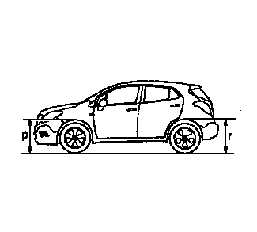
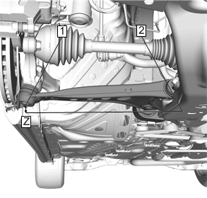
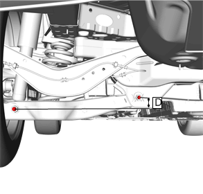

车身翘头高度的检查
车身翘头高度的测量
车身翘头高度是一个针对车辆行驶高度的预定值。不正确的车身翘头高度可能导致车辆底盘在颠簸路面时拖底、损坏悬架系统部件，并出现与轮胎定位问题类似的症状。诊断悬架系统故障以及检查车轮定位情况前，先要检查车身翘头高度。
测量车身翘头高度前，执行以下步骤：
•
将轮胎气压设置到认证标签上指示的规格。
车辆合格证、轮胎标牌、防盗标签和维修件识别标签
•
检查燃油油位。必要时增加重量以模拟油箱加满时的状态。
•
确保乘客舱和行李厢除备胎外都已清空。
•
确保车辆停放在平坦的表面上，比如校准平台。
•
检查所有车门都已牢固关闭。
•
检查车辆发动机舱盖和行李厢盖已牢固关闭。
•
检查可能影响车身翘头高度测量的售后加装附件或改装设备。
–
大于或小于原装车轮和轮胎。
–
提升或下降组件
–
轮眉或地面影响
测量P和R的尺寸

测量定义
P高度：地面至车轮开口顶部穿过前轮中心线的垂直距离。
R高度：地面至车轮开口顶部穿过后轮中心线的垂直距离。
使用以下程序，测量P和R的尺寸：
注意:
左右P和R高度差应不大于
12 mm (47 in)
。
1.
将前保险杠按下至少
25 mm (1 in)
然后松开。执行该步骤3次。
2.
按照上述“测量定义”测量并记录车身翘头高度。
3.
抬起保险杠至少
25 mm (1 in)
然后松开。执行该步骤3次。
4.
按照上述“测量定义”测量并记录车身翘头高度。
5.
P高度实际测量值为步骤2 和步骤 4中的测量值的平均值。
车身翘头高度规格
6.
在车辆后部重复以上步骤以测得R高度。
7.
如果P 和 R高度超出规定值，则测量Z 和 D高度。
测量Z尺寸
测量定义

Z高度：与球节齐平的托架(2)底面与球节架(1)的中心点之间的垂直距离。
使用下列程序测量Z尺寸：
注意:
左右Z高度差应不大于
10 mm (.39 in)
。
1.
将前保险杠按下至少
25 mm (1 in)
。执行该步骤3次。
2.
按照上述“测量定义”测量并记录车身翘头高度。内侧Z高度测量值可从车底防护板中的检修孔(2)处获得。(1)。
3.
抬起前保险杠至少
25 mm (1 in)
。执行该步骤3次。
4.
按照上述“测量定义”测量并记录车身翘头高度。
5.
Z高度实际尺寸为步骤2 和步骤 4中的测量值的平均值。
车身翘头高度规格
6.
如果这些测量值超出规定值，则检查是否存在以下情况：
•
悬架部件磨损或损坏
•
碰撞损坏
D高度测量值

测量定义
D高度 GNC：下控制臂外螺栓(1)的中心至下控制臂内螺栓(2)的中心的垂直距离。
使用下列程序检查D尺寸：
注意:
左右D高度差应不大于
10 mm (.39 in)
。
1.
按下后保险杠至少
25 mm (1 in)
。执行该步骤3次。
2.
按照上述“测量定义”测量并记录车身翘头高度。
3.
抬起后保险杠至少
25 mm (1 in)
，然后松开。执行该步骤3次。
4.
按照上述“测量定义”测量并记录车身翘头高度。
5.
D 高度实际为步骤 2 和步骤 4中的测量值的平均值。
车身翘头高度规格
6.
如果这些测量值超出规定值，则检查是否存在以下情况：
•
悬架部件磨损或损坏
•
碰撞损坏